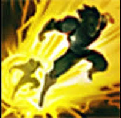
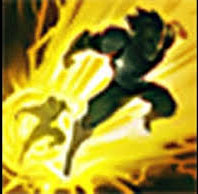

Champion Select
Usually the mid laner will play as an assassign or mage. Some examples are champions like zed, ahri, akali, ekko, fizz, talliah, or veigar. You will usually choose an abiliy power based champion, because most of the other roles use attack damage. You will likely take ignite and flash as your summoner spells, but some people like to take barrier instead of ignite.

 

Laning Phase
Your minions will arive in lane at around 1:30, ehich is when the laning phase will start. You should try to get as much cs as you can, while poking your enemy laner. Your goal will be to try and pull off a few succesful kills, in order to get a lead on your laner, so that it will be easier for you to take the outer turret. You should also try to pull off a few roams either top or bot lane in order to try and help your teamates get ahead.
Team Fights
During team fights if you chose a mage then you will be in the backlines, firing abilitys at the enemys from afar, but if you chose a melee assassign you will be trying to eliminate there carrys, in order to prevent the enemy team for winning.